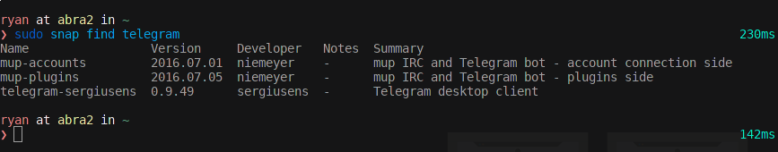
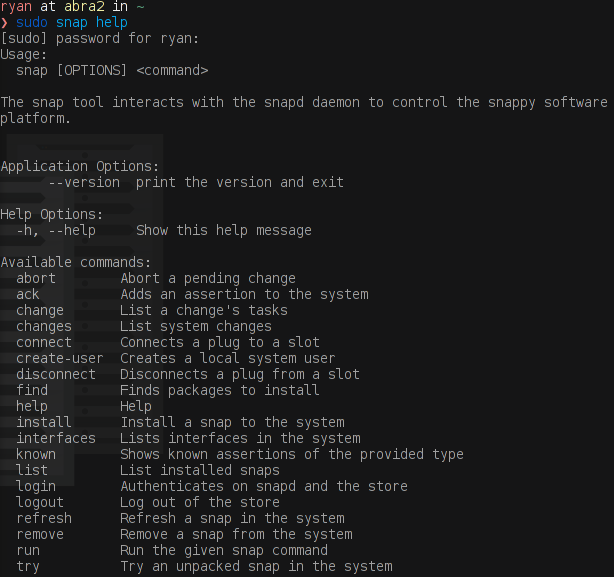
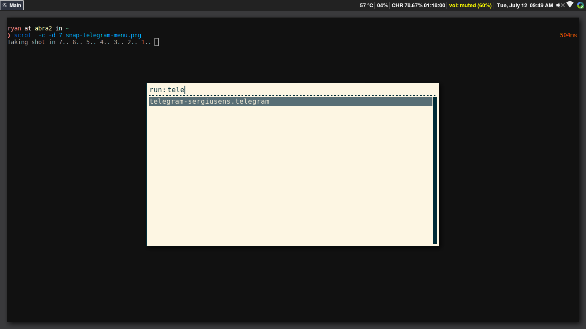
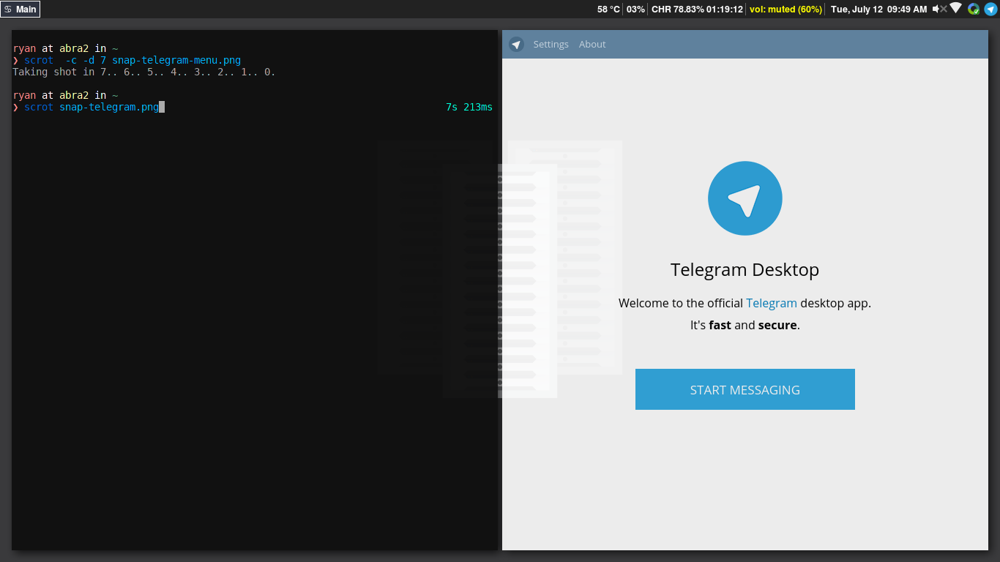

The past few weeks I have been listening to all of the buzz about Ubuntu “snaps”, but I just recently decided to try this new technology out.
Snapd Install and Setup
I decided to install snapd on my small netbook (Abra), which is running Arch Linux. So, installing snapd was as easy as running:
pacaur -S snapd
Now, I use pacaur so that I can install packages from Arch Linux’s main repos, as well as the AUR. However, because snapd has actually been moved to the community repos, you can install it with vanilla pacman, without aur support.
sudo pacman -S snapd
After snapd is installed, it needs to be started. To start the snapd service, just use systemd:
sudo systemctl start snapd
Additionally, If you want to start the snapd service automatically after a reboot run the command:
sudo systemctl enable snapd
Using snap
After snapd was installed and running, I started
playing with the snap application. The first thing I should note is
that to the extent of my knowledge, snap has to be run as root (at
least for now). So my commands all start with sudo.
First, I wanted to find a snap package. This can be done using the
snap find command as follows:
sudo snap find package-name
(where package-name is the name of the package to search)

Just like in any standard package manager search, the potential matches were returned, along with a version number, the developer name, and a summary.
Snap has several other commands. To see a full list of available snap commands and a description for each one, just type:
sudo snap help

Testing a snap
After learning about the basic snap commands, I wanted to install a
snap to see how well it works. I decided to see if there was a
Telegram snap (I heard there was, so it was a good bet). I ran
sudo snap find telegram, and a list of my options appeared.

I choose the last one, and installed it using the command
sudo snap install telegram-serguisens. A progress bar tracked the download of
the snap, and then the installation. That was it. To my delight,
within a few seconds the Ubuntu snap application had downloaded the
telegram snap, and installed it on my arch linux box, without any issue.
My Only Issue

Well… almost without any issues. The one problem I did have was after installing the telegram snap, the executable wasn’t in my path so I couldn’t start it from my launcher or even a terminal. I think this was actually because snapd wasn’t setup fully. I rebooted my computer and telegram now launches just fine. The snap is even identified with its full name (telegram-serguisens), so I can be sure it is the actual snap, and not another Telegram install.
Thoughts

While the fact that snaps are easy to package and install for developers and users alike, I think my favorite feature was something that I didn’t even think about prior to trying it out, and I might not of realized had I installed snapd on another computer…
This little computer is low power, and tends to heat up and go crazy when I install certain packages (particularly ones from the AUR). Sometimes it is so bad that I have to kill the installation and forego that application for awhile. Telegram is one of them. I think this is because the aur build pulls down the telegram .deb package and then has to extract and compile it in order to install it on Arch. This little computer doesn’t like that. The snap however, seems to of just download and installed itself. It hardly pegged my CPU at all. If this is true, snaps might have an additional use-case on weaker hardware, like my netbook. (yes, I know snaps might have a bigger disk footprint, but honestly that trade-off is fine with me)
I think the universal application frameworks are a great idea that is very much needed on Linux. Snapd is very promising and I look forward to seeing what it and other solutions have in store for the future of Linux.